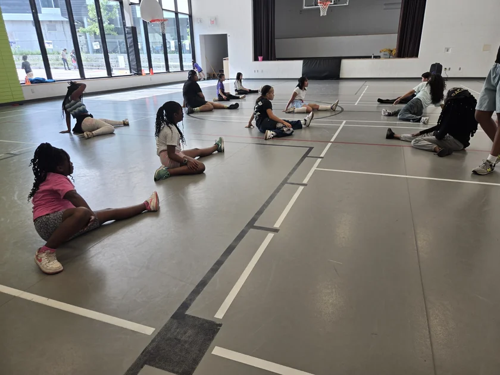

Team HubWorkshops, Clubs and Battles
Plan your next move with a teacher or adult advisor.
Bring H4 to your school
- Think of a teacher who supports dance, arts, leadership or clubs.
- Use the teacher introduction and offer the workshop handout.
- If the teacher is interested, ask about timing, space and school approval. Ask the teacher to follow up with H4.
- If adults confirm the workshop, pick a supervised job like setup, welcome or cleanup.
Get approval. H4 and the school confirm availability, dates, any costs, space and supervision before an announcement.
Get the teacher handout
Start an H4 school club
- Ask the school office or a teacher how to start a club.
- Find a teacher sponsor. Draft a goal, activities, meeting time and space together.
- Check safety, accessibility, how students join and what permissions you need.
- After school approval, run a supervised first meeting with a welcome, team goal, activity and next step.
Get approval. Your school approves the plan, space and supervision. Your teacher helps submit the application.
Get the club planning sheet

Build a school dance crew
- Invite students through an approved school channel. Welcome beginners and skip tryouts.
- Ask a teacher about safe space and adult supervision.
- Plan a warmup, a few beginner moves and a cooldown. Ask your teacher to review it.
- Share one move in a private video of yourself, or write down the steps. Ask H4 for event details before planning to enter.
Get approval. Get teacher approval before practice. Follow school and H4 rules for filming and events.
Open the Get Battle Ready mission